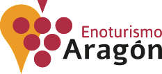

<!DOCTYPE html> 
<html> 
    <head> 
        <title>Ruta del vino</title> 
        <meta name="viewport" content="width=device-width, initial-scale=1.0, maximum-scale=1.0, user-scalable=no"> 
        <link rel="stylesheet" href="css/leaflet.css"> 
        <script src="js/leaflet.js"></script> 
        <style> 
            body { 
                padding: 0; margin: 0; } 
            html, body, #map { 
                height: 100%; width: 100%; } 
            .legend {
            width: 310px;
            font-size: 15px;
            color:rgb(250, 250, 250);
            font-family: Cambria, Cochin, Georgia, Times, 'Times New Roman', serif;
            padding: 0px 15px;
            background-color: rgba(140,107,177);
            box-shadow: 0 0 15px rgba(0,0,0,0.8);
            border-radius: 5px;
            border: 3px solid purple;
            }
            .legend img {
            width: 180px;
            margin: auto;
            padding: 10px 0px;
            display: block;

            }
        </style> 
    </head> 
    <body> 
        <div id="map"></div> 
        <script>  
                let capa = L.tileLayer( 'https://server.arcgisonline.com/ArcGIS/rest/services/World_Street_Map/MapServer/tile/{z}/{y}/{x}', {
	            attribution: 'Tiles &copy; Esri &mdash; Source: Esri, DeLorme, NAVTEQ, USGS, Intermap, iPC, NRCAN, Esri Japan, METI, Esri China (Hong Kong), Esri (Thailand), TomTom, 2012'}); 
                let capa2 = L.tileLayer( 'https://{s}.tile.openstreetmap.org/{z}/{x}/{y}.png', {maxZoom: 19,
	            attribution: '&copy; <a href="https://www.openstreetmap.org/copyright">OpenStreetMap</a> contributors'});
                let map = L.map("map", {center: [41.764996, -0.493045], zoom: 8.5, layers: [capa, capa2]});
                let baseMaps = {
                "Carreteras": capa,
                "Callejero": capa2
                };
                L.control.layers(baseMaps).addTo(map);


                let grapesIcon = L.icon({
                iconUrl: 'https://images.emojiterra.com/openmoji/v12.2/512px/1f347.png',
                iconSize:     [50, 50], // size of the icon
                iconAnchor:   [25, 25], // point of the icon which will correspond to marker's location
                });

                let hotelIcon = L.icon({
                iconUrl: 'https://img.icons8.com/emoji/452/hotel-emoji.png',
                iconSize:     [50, 50], // size of the icon
                iconAnchor:   [25, 25], // point of the icon which will correspond to marker's location
                });

                let start = L.icon({
                iconUrl: 'https://image.flaticon.com/icons/png/512/1850/1850761.png',
                iconSize:     [50, 50], // size of the icon
                iconAnchor:   [25, 25], // point of the icon which will correspond to marker's location
                });

                let end = L.icon({
                iconUrl: 'https://image.flaticon.com/icons/png/128/2553/2553273.png',
                iconSize:     [50, 50], // size of the icon
                iconAnchor:   [25, 25], // point of the icon which will correspond to marker's location
                });

                let inicio = L.marker([41.834222, -1.533636], /* Bodegas Aragonesas*/
                {icon:start}).bindPopup("<h2>La ruta se iniciará en el municipio de Borja.</h2>").addTo(map);

                let fin = L.marker([42.035494, 0.125992],
                {icon:end}).bindPopup("<h2>La ruta terminará en el municipio de Barbastro.</h2>").addTo(map);
          
                let Cariñena = L.marker([41.427506, -1.235806], /* Bodegas Estéban Martín, S.L.*/
                {icon: grapesIcon}).bindPopup("<h1>3. Bodega Esteban Martín</h1><p>Habrá degustación de <b>vino tinto Estebán Martín</b> elaborado principalmente con Garnacha y también Syrah (<a href='http://www.estebanmartin.com/' target='_blank'>Página Web Oficial</a>).</p>",{
                    maxWidth: 200}).addTo(map);
                let Somontano = L.marker([42.101816, 0.085760], /* Bodega Enate*/
                {icon: grapesIcon}).bindPopup("<h1>4. Bodega Enate</h1><p>Habrá una degustación de <b>Vino tinto Enate Merlot</b> elaborado con uva Merlot (<a href='https://www.enate.es/' target='_blank'>Página Web Oficial</a>).</p>",{
                    maxWidth: 200}).addTo(map);
                let Somontano2 = L.marker([42.060526, 0.091172], /* Viñas del vero*/
                {icon: grapesIcon}).bindPopup("<h1>5. Bodega Viñas del Vero</h1><p>Habrá una degustación de <b>vino tinto Blecua</b> elaborado principalmente con Cabernet Sauvignon además de Merlot, Garnacha y Tempranillo (<a href='https://www.vinasdelvero.es/' target='_blank'>Página Web Oficial</a>).</p>",{
                    maxWidth: 200}).addTo(map);
                let CampoBorja = L.marker([41.762002, -1.475259], /* Bodegas Aragonesas*/
                {icon: grapesIcon}).bindPopup("<h1>1. Bodegas Aragonesas</h1><p>Habrá una degustación de <b>vino tinto Garnacha Centenaria</b> elaborado 100% con uva Garnacha (<a href='https://bodegasaragonesas.com/es/' target='_blank'>Página Web Oficial</a>).</p>",{
                    maxWidth: 200}).addTo(map);
                let Calatayud = L.marker([41.446590, -1.707904], /* Bodegas Niño Jesús, de Aniñón*/
                {icon: grapesIcon}).bindPopup("<h1>2. Bodega Niño Jesús</h1><p>Habrá degustación de <b>vino rosado 1428</b> elaborado principalmente con Garnacha y Syrah (<a href='https://www.satninojesus.com/es/' target='_blank'>Página Web Oficial</a>).</p>",{
                    maxWidth: 200}).addTo(map);
                
                let Zaragoza = L.marker([41.649066, -0.881422], /* Alojamiento en el NH Collection Gran Hotel*/
                {icon : hotelIcon}).bindPopup("<h1>NH Collection Gran Hotel</h1><p>Se alojarán una noche en el <b>NH Collection Gran Hotel</b> de Zaragoza en régimen de alojamiento y desayuno (<a href='https://www.nh-hoteles.es/hotel/nh-collection-gran-hotel-de-zaragoza?utm_campaign=local-gmb&utm_medium=organic_search&utm_source=google_gmb&utm_term=langtest' target='_blank'>Página Web Oficial</a>).</p>",{
                    maxWidth: 500}).addTo(map);
                
                let route = L.polyline([[41.762002, -1.475259], [41.446590, -1.707904], [41.427506, -1.235806], [41.649066, -0.881422], [42.101816, 0.085760], [42.060526, 0.091172]],
                {color: "purple", weight: 2}).addTo(map);


                let legend = L.control({position: "bottomright"});


                legend.onAdd = function() {

    
                let div = L.DomUtil.create("div", "legend");
                div.innerHTML = 
                '<H3><p><u><b>Ruta del vino en Aragón</H3></u></b></p>' +
                '<p>El vino en Aragón es representado por sus diversas denominaciones de origen.</p>' +
                'Las bodegas que van a visitar en esta ruta son:<br>' +
                '<p><ol>' +
                '<li>Bodegas Aragonesas (D.O. Campo de Borja)</li>' +
                '<li>Bodega Niño Jesús (D.O. Calatayud)</li>' +
                '<li>Bodega Esteban Martín (D.O. Cariñena)</li>' +
                '<li>Bodega Enate (D.O. Somontano)</li>' +
                '<li>Bodega Viñas del Vero (D.O. Somontano)</li>' +
                '</ol></p>' +
                'Además se hospedarán una noche en Zaragoza en el hotel:' +
                '<ul><li>NH Collection Gran Hotel</li></ul>' +
                '<hr>' +
                '¡Clica sobre los <b>iconos</b> del mapa para más información!<br>' +
                '';

    
                return div;

                };


                legend.addTo(map);
        </script> 
    </body> 
</html>

<!-- https://www.vinoaragones.com/guia-vinos-2019-mejores-vinos-de-aragon/ -->